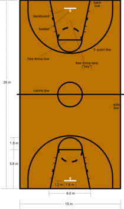

The size and duration of attacks usually vary between tournaments and organizations; international and NBA rules are used in this part of the article. The purpose of the game is to exceed the number of baskets (points) of the other team by putting the ball through the hoop of the opponent's basket, provided that the ball entered the hoop without passing through the lower part of the hoop, but from above, and preventing the opposing team from putting the ball through the basket of the team that is defend. An attempt to throw the ball through the hoop (into the basket) is called a shot. A successful field goal is worth two points if the shot was sent in such a way that the last place where the shooter stood was inside the arc of radius 6.75 (until 2010/11 6.25) meters in Europe, and 7.24 meters in the NBA. A shot outside that arc is worth three points.
 The game is played for four quarters of ten (international basketball) or twelve minutes (NBA). Universities play two 20-minute halves, while most colleges play four eight-minute quarters. The big rest after two quarters lasts fifteen minutes, and the rest between two quarters lasts two minutes. If the game is tied after four quarters, one overtime of five minutes is played. If the game is still tied after one overtime, overtimes continue until a winner is determined. The teams exchange baskets after two played quarters. The clock moves while the ball is in play; when the ball is out of bounds or not in active play, the clock stops. This is precisely why games last approximately two hours, much longer than the scheduled 40 (international basketball) or 48 minutes (NBA).
Five players from one team may be on the field at the same time. Teams may have a maximum of seven substitutes. Substitutions can be made indefinitely, but only when the clock is stopped, i.e. when the game is not active. The teams have a coach, who most often develops the tactics and strategy of the team, and other personnel who also actively participate, but outside the field (doctors, assistant coaches, statisticians). The jersey is the same for both men and women. The standard jersey consists of pants that today reach below the knees and a sleeveless shirt with a clearly visible number that no one else in the team has, which is printed on both the chest and the back. Professional basketball players use special shoes with high soles that provide additional support for the heels. Apart from the number, the shirts also have the names of the club, players and sponsors.
The ball may be guided towards the basket by shooting it, passing it between players, throwing it, pushing it, rolling it or dribbling it (bouncing the ball off the floor while running). The ball must remain inside the court; the team that touches the ball last before it touches the boundary line of the court or crosses it loses possession of the ball. A player moving with the ball must not move both feet while dribbling (driving the ball), otherwise steps are judged, he must not catch the ball with both hands or dribble with both hands, otherwise double handling is judged. The player's hand must not be under the ball while dribbling, otherwise the ball is judged as carried. A team that has possession of the ball in the offensive part of the field may not return the ball to the defensive part of the field. The ball may not be hit with the fist. If a player disobeys any of these rules while his team is attacking, the team loses the ball; if the team defended, the attack is repeated from the beginning.
There are restrictions related to: the time allowed for the ball in the possession of a team to pass from the defensive to the attacking part of the field (eight seconds); the maximum allowed time that can pass without the ball in the team's possession touching the hoop of the opponent's basket (25 seconds); holding the ball without dribbling (driving the ball) while the player is in possession of the ball (five seconds), and holding the racket under the basket (three seconds). These rules are introduced to force the team to attack. A player may not interfere with the basket by touching any part of the basket structure or touch the ball that is in the downward path after the opponent's shot towards the basket, and may not touch the ball that is on the hoop (in the NBA, you may not touch the ball that is vertically above the hoop) . If a player defending his basket disobeys this rule, it is goaltending, i.e. a shot made by the opponent is considered successful. If a player shoots towards the basket, and his teammate disobeys one of these rules, the attack is stopped, and the ball goes into the possession of the team that was defending in that attack.
You can view the FIBE rules script HERE!